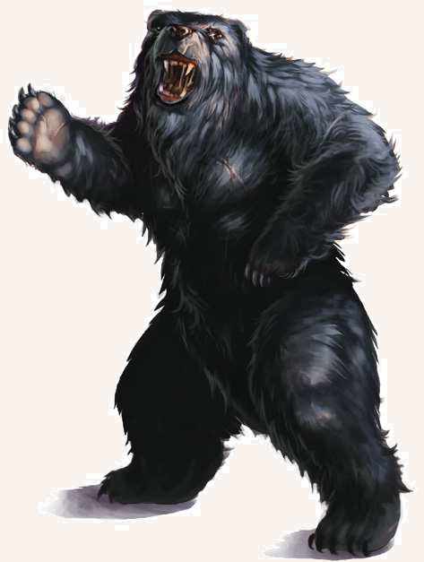

Unter den aventurischen Bären ist der Schwarzbär der häuigste und bekannteste. Er ist zwar nicht so groß wie ein Höhlen- oder Firunsbär, aber dennoch eine beeindruckende Gestalt, wenn er sich vor einem auf die Hinterbeine stellt. Er frisst Planzen, Wurzeln, Honig, Fleisch und Fisch. Menschen gehören nicht auf seinen Speiseplan, aber wenn sie ihm zu nahe kommen, kann es für sie unangenehm werden. Zudem verfällt der Schwarzbär, wie viele Bären, in einen regelrechten Kampfrausch, wenn er verletzt wird. Er ist als Jagdwild begehrt, da aventurische Jäger seinen Pelz gewinnbringend verkaufen können, auch wenn sie oftmals ihr Leben bei der Jagd einbüßen. Sein Lebensraum ist der Bornwald, aber auch in Mittelaventurien, vor allem in Weiden und Tobrien, trifft man immer wieder auf wilde Schwarzbären, hin und wieder auch auf ihre engen Artverwandten, die Braunbären. Ansonsten kann man Schwarzbären auch in der Menagerie eines Wanderzirkus entdecken, wo sie als abgerichtete Attraktionen gehalten werden.

Schwarzbär
Größe: 3,00 bis 3,20 Schritt Körperlänge
Gewicht: 600 bis 750 Stein
Eigenschaften:
MU 14
KL 12
IN 12
CH 12
FF 11
GE 11
KO 20
KK 21
LeP: 60
AsP: -
KaP: -
INI: 13+1W6
SK: 0
ZK: 5
GS: 10
VW: 6
Tatze:
AT: 13
TP: 1W6+6
RW: mittel
Biss:
AT: 11
TP: 2W6+2
RW: kurz
RS/BE: 1/0
Aktionen: 2 (max. 1 x Biss)
Vor- und Nachteile: Schlechte Eigenschaft (Neugier), Herausragender Sinn (Geruch)
Sonderfertigkeiten: Wuchtschlag I (Biss, Tatze), Zu Fall bringen (Tatze)
Talente:
Klettern 7 (14/11/21),
Körperbeherrschung 4 (11/11/20),
Kraftakt 12 (20/20/21),
Schwimmen 7 (11/20/21),
Selbstbeherrschung 12 (14/14/20),
Sinnesschärfe 10 (12/12/12),
Verbergen 2 (14/12/11),
Einschüchtern 10 (14/12/12),
Willenskraft 4 (14/12/12)
Anzahl: 1 oder 1W3+1 (Familie)
Größenkategorie: mittel
Typus: Tier, nicht humanoid
Kampfverhalten: Wird der Bär provoziert oder angegriffen, stellt er sich auf die Hinterbeine, greift mit Hieben seiner Tatzen an und versucht seinen Gegner zu beißen.
Flucht: Verlust von 50% der Lebenspunkte, außer er ist in Raserei, dann kämpft er bis zum Tod.
Beute: 100 Rationen Fleisch, Fell (30 Silbertaler), Trophäe (Zähne und Klauen, 5 Silbertaler)
Jagd: -3
Sonderregeln: Berserker: Jedes Mal, wenn ein Bär eine Stufe des Zustands Schmerz erhält oder seine Jungtiere in Gefahr
sind, muss eine Probe auf Willenskraft gewürfelt werden. Bei Misslingen verfällt er in Raserei und erhält den Status Blutrausch. Dadurch hat der Bär ab der nächsten Kampfrunde eine Erleichterung von
4 Punkten auf alle Nahkampf-Attacken und richtet +2 Trefferpunkte Schaden an, kann sich aber nicht mehr verteidigen. Die Raserei hält für 2W20 KR an. Der Bär kann den Blutrausch beenden, wenn ihm
eine Probe auf Selbstbeherrschung gelingt (einmal pro Kampf erlaubt). Danach bekommt der Bär zwei Stufen Betäubung. Ansonsten endet der Status nach dem Tod des Gegners oder spätestens nach 1 Stunde.
| LeP-Verlust | Schmerz | |
|---|---|---|
| 45 LeP (¾) | +1 Schmerz | |
| 30 LeP (½) | +1 Schmerz | |
| 15 LeP (¼) | +1 Schmerz | |
| 5 LeP und weniger | +1 Schmerz |
| Tierkunde | (Wildtiere) | |
|---|---|---|
| QS1 | Bären haben keine Mimik und können schneller rennen als Menschen. | |
| QS2 | Bären sind neugierig und haben einen feinen Geruchssinn. Sie erspüren ihre Beute bereits aus der Ferne. Man kann ihnen daher am besten ausweichen, indem man gegen den Wind läuft. | |
| QS3 | Ein Bär kann in Raserei verfallen, wenn er verletzt wurde oder seine Jungtiere in Gefahr sind. |